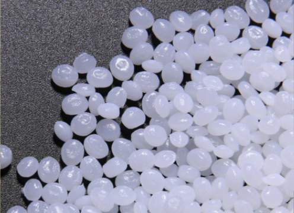
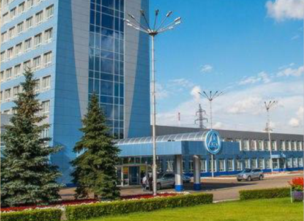

на производстве
используется только
ПЕРВИЧНОЕ СЫРЬЕ
В производстве
белых и цветных изделий
используется Блок-сополимер
пропилена и этилена.
В производстве прозрачных изделий
используется Стат-сополимер
пропилена и этилена производства
ПАО НИЖНЕКАМСКНЕФТЕХИМ


Наличие КОНТРОЛЬНОГО ЗАМКА
имеет большое значение
при реализации пищевой продукции.
Контрольный замок гарантирует
целостность упаковки
Все наши изделия проходят проверку
на ГЕРМЕТИЧНОСТЬ
по ГОСТу 33756-2016
в собственной лаборатории
предприятия.

Широкая ПАЛИТРА ЦВЕТОВ.
Мы используем концентраты красителей БАСКО™


ПРОЧНОСТЬ РУЧЕК
соответствует
ГОСТу 33756
Ведра объемом 10 литров
и 21 литр укомплектованы
металлической ручкой.